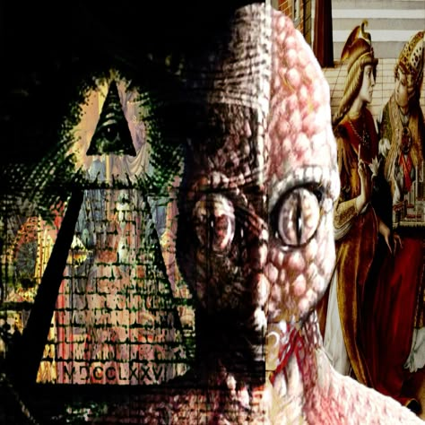

> TRANSMISSION_LOG.001
(the opening sequence in-game tells this part live — this is the archived transcript)
Every village has a kid who sneaks out at night. This one followed a light into the treeline — a mystic, or something wearing its shape — deeper than the critters and the mist should allow.
The ground gave out. Not a hole. A seam. And on the other side of it, the rainforest doesn't end where it should — it folds into something colder, wider, full of drifting wreckage that was never a tree.
Two worlds pressed into one void. The only way through is the shards of light still drifting loose in it — and whatever gets built from what's left behind when a wall finally cracks.

> CONTROL_SCHEME
- MOUSE steer the glow — it has real momentum, so it drifts
- FOLLOW during the intro, get close to the light to advance
- DRAG pick up a luminescent shard
- DROP release it on its matching portal ring
- DODGE debris now costs you a hit — three hits knocks you back and drops a fragment
- GRAB drifting power-ups: speed, slow-field, or shield
- CLICK break a cracked wall once you're carrying a fragment
- COMBINE drag one found material onto another to craft a key
- UNLOCK click a faint rune while carrying a key to open a secret